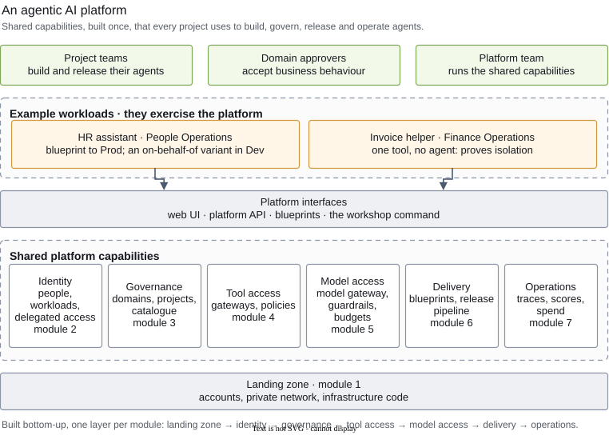
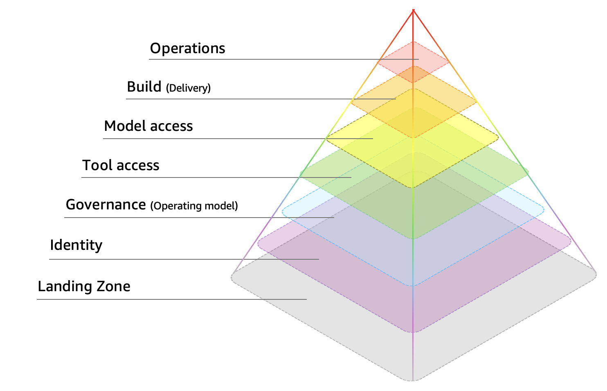
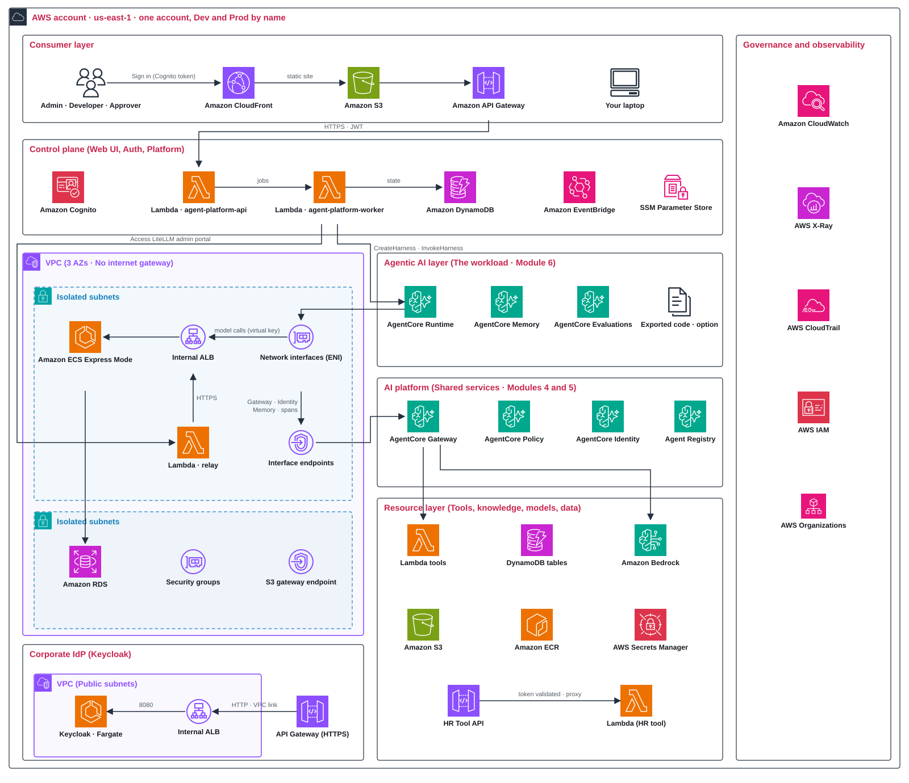

Why an agentic AI platform
Without a platform, independent teams each repeat the same shared capabilities and controls: sign-in, tool access, model keys, guardrails, budgets, release checks and monitoring, each built a little differently.
An agentic AI platform builds those capabilities once and offers them to every project, so a team writes the part that is its own, the use case, and inherits the rest with the organisation's rules already applied.


| Shared capability | What every project gets | Module |
|---|---|---|
| Landing zone | accounts, a private network and the code that builds them | 1 |
| Identity | sign-in for people, an identity for every agent, a vault for credentials, and the employee's identity carried to a tool | 2 |
| Governance | domains and projects as tenants, rules at the right level, and a catalogue of approved tools, knowledge and models | 3 |
| Tool access | controlled access to tools and knowledge through gateways | 4 |
| Model access | configured model aliases behind one door, with guardrails, rate limits and budgets | 5 |
| Delivery | a path from blueprint to Prod: evaluation, approval and promotion | 6 |
| Operations | traces, quality scores, policy decisions and cost in one view | 7 |
How an organisation uses it
A platform team runs the shared capabilities. Project teams in each business domain build agents on them. A domain approver accepts an agent's business behaviour before it reaches Prod. You play all of these roles during the day (module 2 introduces the personas).
Two example workflows exercise the platform; neither is the point of the day:
- HR assistant (People Operations): the agent you take through the whole path, from blueprint to Dev, evaluation, approval and Prod, running under its own service identity. A separate on-behalf-of variant in Dev, never released, demonstrates carrying an employee's identity to the HR tools.
- Invoice helper (Finance Operations): one tool and no agent. It exists to prove isolation: module 3 shows that HR's agent role cannot call the Finance tool directly, and module 4 shows that Finance's role is refused at HR's gateway. It is never released.
Built progressively
The modules follow the order an architect decides in: the landing zone first, because everything stands on it, then identity, governance, tool access, model access, delivery and operations. Each layer uses the ones below it.
Reading a decision
Every module asks a few design questions. Two labels keep the reference answer and the lab apart:
- Recommended marks the reference option for a production platform, where one is defensible, and it comes first as A.
- This workshop marks what the lab builds. It can differ from the recommendation, because an event account is one account with no corporate identity provider.
A tag under each question says what kind it is: choose one options exclude each other; patterns combine are used together, each in its own situation (approvals in module 6 and evaluation approaches in module 7 are examples); depends on context has no universal winner.
The learning path
Seven modules, one per layer of the platform, arranged in the order an architect decides.
Each module has three parts
What decisions this layer needs, and why
The options, pros & cons, when to pick each
Build this workshop's choice in your account, and see it work.
How you'd build
① Architecture

② Request flow
Step-by-step explanation
- User invokes the AgentCore Harness endpoint with a session id. Agent runs the session in its own microVM.
- The harness fetches its virtual key from the AgentCore Identity token vault and calls LiteLLM. LiteLLM enforces model allow-list, rate limits and budgets for the project (via virtual key), applies the Bedrock guardrail attached to the model alias, calls Amazon Bedrock, and records usage and cost.
- If the model asks for a tool, the harness calls the project AgentCore Gateway. The Policy engine evaluates the Cedar policies for the harness's execution role, the tool and its arguments, then the gateway invokes the Lambda tool or the knowledge-base connector.
- Memory events are written for the session. A long-term strategies extract summaries and preferences asynchronously.
- The answer streams back with usage metadata. Spans and metrics land in CloudWatch. The spend row lands in LiteLLM; Online evaluation scores the session with a few minutes delay asynchronously.
These two choke points enforces who may use what, how much, and under which rules.
③ Release flow
Step-by-step explanation
-
workshop apply 6(or the Releases screen) stores blueprint version n; the worker creates the immutable Harness version and deploys it to the Dev harness. -
The evaluation run invokes the Dev endpoint for every scenario,
waits for telemetry, and scores each scenario with built-in
evaluators. The worker runs it for a release created on the
Releases screen (or with Run evaluation);
workshop apply 6runs it itself and posts self-reported scores. - The platform compares scores with the thresholds in the blueprint and marks the release BLOCKED or PENDING_APPROVAL.
- The Domain approver reviews the evidence in the UI and approves.
- The worker runs promotion from the UI or API: it renders the same blueprint for Prod (Prod gateway, memory and key, creating the Prod key when missing), updates the Prod harness to a new immutable version, and ensures online evaluation is monitoring it.
Agenda
| Time | Block | Min |
|---|---|---|
| 09:00 | Welcome + Kahoot (survey cohort's background and preferences) | 10 |
| 09:10 | Presentation: Agentic AI Platform | 30 |
| 09:40 | Module 1 - Landing zone | 40 |
| 10:20 | Module 2 - Identity | 40 |
| 11:00 | Break | 10 |
| 11:10 | Module 3 - Control plane and governance | 40 |
| 11:50 | Module 4 - Tool plane | 40 |
| 12:30 | Lunch | 45 |
| 13:15 | Module 5 - Model gateway | 40 |
| 13:55 | Module 6 - Project blueprints and delivery | 40 |
| 14:35 | Break | 10 |
| 14:45 | Module 7 - Operate and observe | 40 |
| 15:25 | Wrap-up + Room QA | 15 |
| 15:40 | End |
The 30-minute presentation: Agentic AI Platform
| Min | Topic | Covers |
|---|---|---|
| 5 | Why a platform | from one agent to many; what every team would otherwise rebuild |
| 7 | Shared capabilities | the logical overview above: identity, governance, tool and model access, delivery, operations |
| 5 | Who uses it | platform team, project teams, domain approvers; the HR and finance examples and what each proves |
| 5 | How to read a decision | recommended reference vs the workshop's choice; choose one, patterns that combine, depends on context |
| 5 | The build path | seven modules, one workshop apply each; the design record |
| 3 | Questions | then Get started and module 1 |
How the day builds the platform
The control plane is already deployed for you.
Each module adds one layer of your own platform foundation. At the end you own a complete, governed platform with one agent in production.
- Pre-deployed for you are the foundation control plane and sample data.
- Modules 1~2 deploy the landing zone, create the user personas and bring up the corporate login (Keycloak).
- Modules 3~7 add the project-level objects with your own values.
The build path you follow
Each layer could be built in several ways; the course discusses them and then builds one path, the same for everyone:
workshop apply 1: one account with Dev and Prod by name, a private VPC with endpoints only, and the LiteLLM model gateway.workshop apply 2: Cognito groups for the three personas, and Keycloak as the employees' login for the on-behalf-of chain.workshop apply 3: the People Operations and Finance Operations domains, one project each, with roles and a model budget stamped from templates.workshop apply 4: one gateway per project and environment, a shared Cedar policy engine, the catalogue, and the on-behalf-of gateway.workshop apply 5: a capped model key in the token vault, and the catalogue approvals.workshop apply 6: the HR assistant's blueprint through one platform-owned CodePipeline: deploy to Dev, evaluate, approve, promote.workshop apply 7: Prod traffic, online scores, policy decisions and spend in one view.
Already pre-provisioned? If your facilitator deployed the landing zone before the day, module 1 runs workshop apply 1 --no-deploy to inspect it instead; every other step is the same.
Your design record
We will use a project template to capture key design decisions:
design-record.yaml
You will edit it throughout this workshop.
One block per module, two parts:
-
inputsare values you set that shape the platform you build today. They are read by the apply command. -
decisionsname, per decision, what this workshop chose. The course page beside it marks the recommended reference option, which can differ. Module 7 turns the differences into a production backlog. Keep personal and company-confidential notes out of the file.
You take the file home: the workshop's choices for every layer, and a backlog of what changes for production.
Hands-on, how it works
In each module, you will perform a list of actions consist of four kinds:
| Step tag | What you'll do | Example |
|---|---|---|
| record | change one value in the design record |
knowledge_filter: HR
|
| command | one command in the terminal; it reads the record and prints what it did |
workshop apply 4
|
| screen | open a platform screen or an AWS console page and find one thing | Governance: the policy mode toggle |
| file | open one file and read one part of it | the agent role template |
Get started before module 1 · 15 min
| Tool | Check and install | What |
|---|---|---|
| A terminal | macOS: Terminal. Windows: PowerShell (not Command Prompt). | Where you type every command. |
| Git |
git --version
·
install Git
|
Fetches the code. |
| uv |
uv --version
·
install uv
|
Builds the Python environment and the
workshop
command.
|
| Node.js 20 or later |
node --version
·
install Node.js
(the LTS offered)
|
Runs the CDK CLI that deploys the landing zone in module 1. |
| An editor | VS Code, or any editor with YAML highlighting |
Where you write
design-record.yaml
.
|
| The event page | keep it open in a browser tab | Your AWS console and your AWS credentials. |
You will need the following tools and environments ready to run the workshop commands, author code and deploy platform.
| Commands | What this does | |
|---|---|---|
| 1 |
git clone <repository URL> && cd workshop-agentic-ai-platform
git clone <repository URL>; cd workshop-agentic-ai-platform
|
Gets the source code from the event's aws sample repository |
| 2 |
uv sync && npm install
uv sync; npm install
|
Builds the Python environment with the
workshop
command and installs the CDK CLI (two to five minutes).
|
| 3 |
source .venv/bin/activate
.venv\Scripts\Activate.ps1
|
Activates the environment so this terminal knows
workshop
(check:
workshop --version
).
|
| 4 |
export AWS_DEFAULT_REGION=us-east-1
$env:AWS_DEFAULT_REGION = "us-east-1"
|
Paste the event page's Get AWS CLI credentials lines for your shell first, then set the region. |
| 5 |
workshop status
|
Prints the status of the eight stacks. In a standard event account four are pre-deployed before module 1 starts; module 1 deploys the three landing-zone stacks and module 2 the corporate IdP. If your facilitator also pre-provisioned the landing zone, its three stacks already read CREATE_COMPLETE, and module 1 uses workshop apply 1 --no-deploy. |
| 6 |
code design-record.yaml
|
Opens your design record in VS Code (or open it in your editor); keep it open, every module writes into it. |
| Your account | Already deployed | Module 1 runs |
|---|---|---|
| Event account (the default) | control plane and sample data | workshop apply 1 |
Event account, landing zone pre-provisioned by the facilitator (workshop deploy landing-zone) | control plane, sample data and the three landing-zone stacks | workshop apply 1 --no-deploy: inspect and run the doctor |
| Your own account | nothing: run workshop deploy pre-day first (about 12 minutes), with AWS_PROFILE set instead of event credentials | workshop apply 1 |